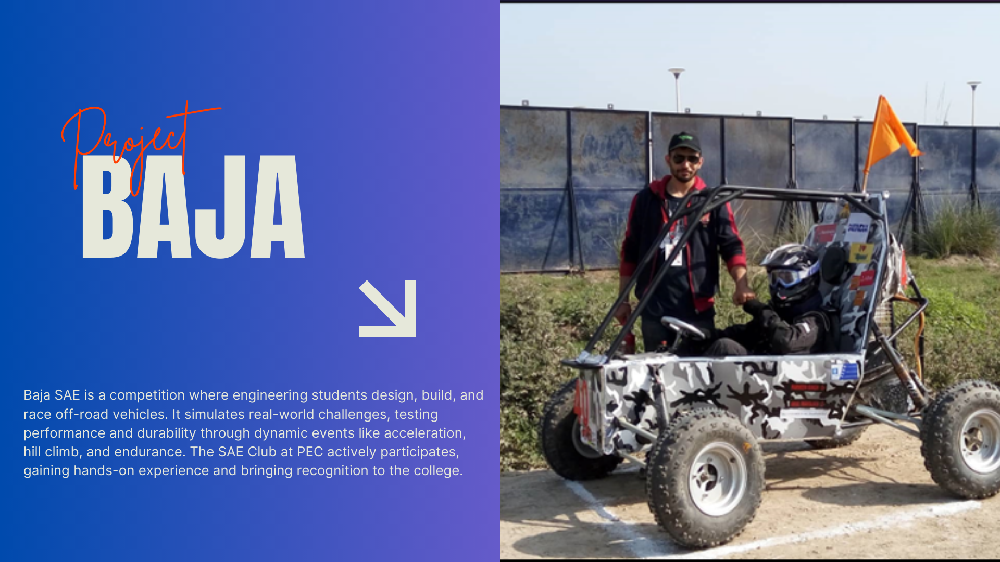
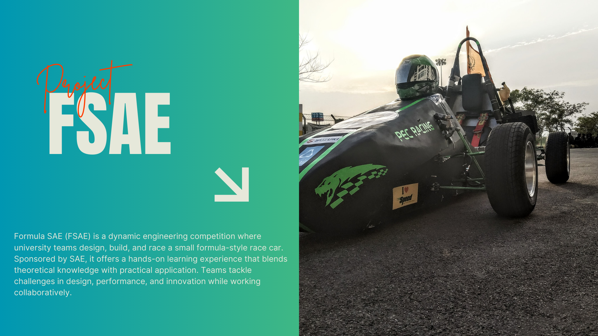
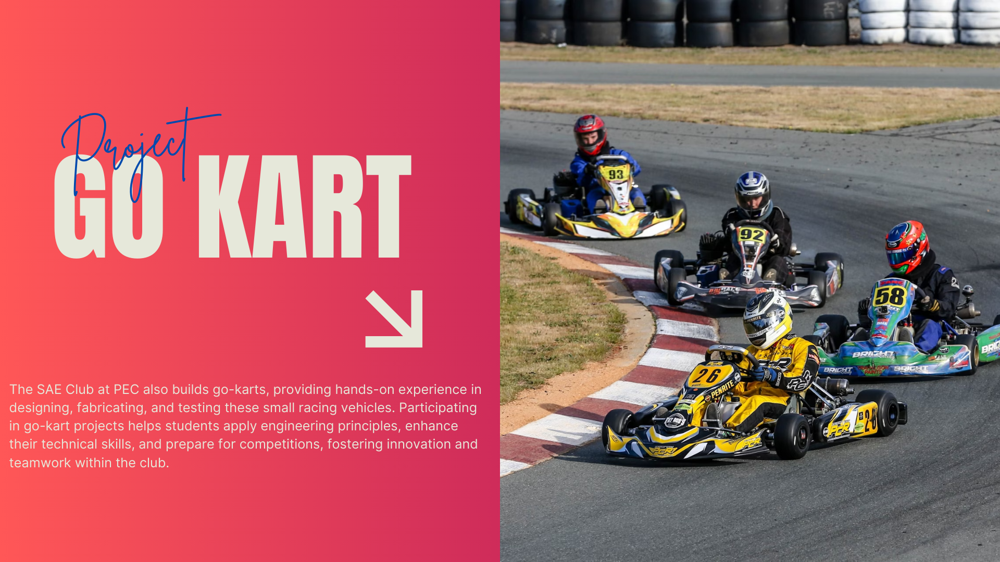

SAE PEC
☰
Baja SAE is a competition where engineering students design, build, and race off-road vehicles. It simulates real-world challenges, testing performance and durability through dynamic events like acceleration, hill climb, and endurance. The SAE Club at PEC actively participates, gaining hands-on experience and bringing recognition to the college.
Formula SAE (FSAE) is a dynamic engineering competition where university teams design, build, and race a small formula-style race car. Sponsored by SAE, it offers a hands-on learning experience that blends theoretical knowledge with practical application. Teams tackle challenges in design, performance, and innovation while working collaboratively.
The SAE Club at PEC also builds go-karts, providing hands-on experience in designing, fabricating, and testing these small racing vehicles. Participating in go-kart projects helps students apply engineering principles, enhance their technical skills, and prepare for competitions, fostering innovation and teamwork within the club.
